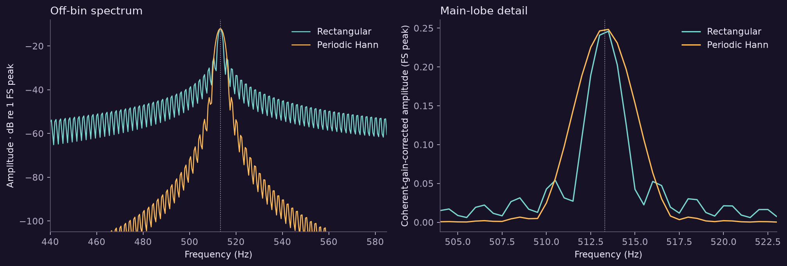
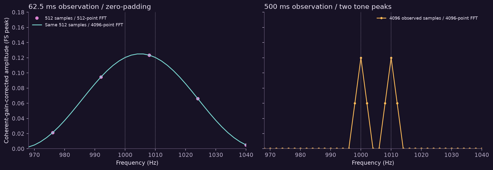
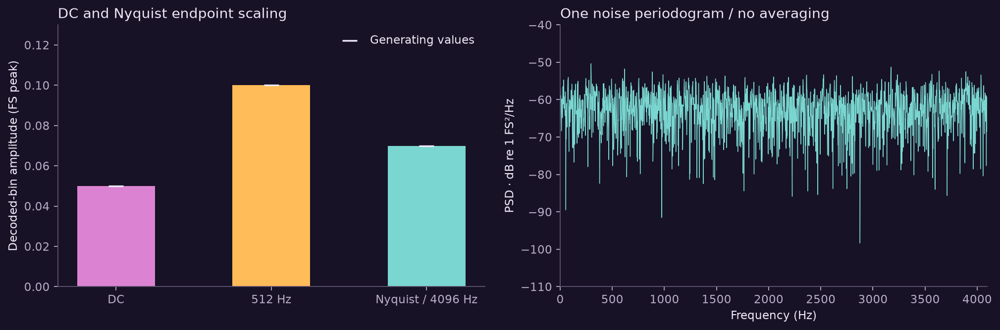
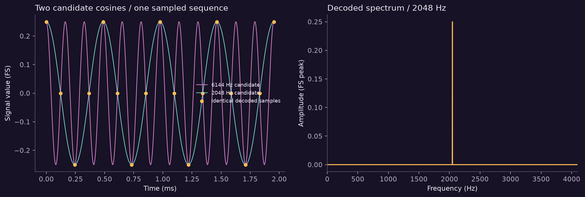
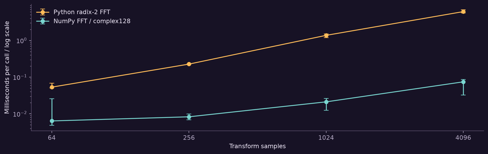

RADIX-2 FFT / AMPLITUDE / POWER SPECTRAL DENSITY
Signal spectrum lab
A complex FFT implemented from source, calibrated one-sided spectra and an STFT of actual decoded PCM16 samples.
9synthetic WAV fixtures
22preserved spectra
56timed transform calls
Replay: four one-second chirps at original speed, with a silent second before and after. The cursor follows stored analysis; this is not live processing. Canonical PCM16 WAV · Replay metadata. The MP4 uses AAC at 48 kHz; analysis uses the original 8192 Hz PCM.
All fixtures are generated here, encoded as mono PCM16, then decoded before analysis. Decoded sample peaks are at most 0.3 full scale. Playback is optional; nothing autoplays. FS denotes the digital sample unit, not acoustic sound pressure.
01 / WINDOWS
Leakage and main-lobe width
The 513.3 Hz tone is off the native 2 Hz bin grid. A periodic Hann window suppresses distant leakage while broadening the main lobe. Both curves use the same 4096 decoded samples and a 16384-point FFT for a denser plotted frequency grid.

Outside ±8 Hz of the generating frequency, the rectangular window places 2.525% of integrated periodogram power; Hann places 0.00138%. This is a defined measurement on this fixture, not a universal window score.
Amplitude uses the window sum for coherent-gain correction. It recovers isolated coherent tones under the stated conditions; an off-bin bin maximum is not automatically the generating amplitude.
02 / OBSERVATION LENGTH
Zero-padding and close tones
Two cosines at 1000 and 1010 Hz use equal peak amplitudes of 0.12 FS. Padding the 512-sample observation changes bin spacing from 16 Hz to 2 Hz, while leaving its 62.5 ms observation unchanged.

Zero-padding samples the same finite-record transform more densely. It adds no observed samples and does not narrow the window's main lobe. The 4096-sample observation supplies 500 ms of actual data and separates the two peaks in this case.
03 / UNITS AND ENDPOINTS
Amplitude and PSD calibration

| QUANTITY | NORMALIZATION | UNIT |
|---|
| Interior-bin amplitude | 2 |X[k]| / Σw | FS peak |
| DC / Nyquist amplitude | |X[k]| / Σw | FS peak |
| Interior-bin PSD | 2 |X[k]|² / (fₛ Σw²) | FS²/Hz |
| DC / Nyquist PSD | |X[k]|² / (fₛ Σw²) | FS²/Hz |
Summing PSD × bin spacing gives Σ(xw)² / Σw². With a rectangular window this is mean-square signal value; for Hann it is the window-weighted mean square. The noise plot is one periodogram, with no averaging or uncertainty interval.
04 / SAMPLING
Aliasing at 8192 samples per second
A 6144 Hz cosine and a 2048 Hz cosine produce the same sampled sequence at this rate. Their committed PCM16 WAV files are byte-for-byte identical. The spectrum cannot recover which continuous cosine generated those samples.

05 / NUMERICAL CHECKS
Transform accuracy and measured runtime
Own-FFT outputs are checked against an independent direct DFT on small inputs and NumPy on larger inputs. In the four recorded decoded-chirp comparisons, the largest absolute complex difference from NumPy is 2.39e-14. That is an observed error, not a universal error bound.

Seven warmed repetitions, median and observed minimum/maximum. Python source code and native NumPy differ in implementation and input preparation. No real-time claim is made.Validation
12 tests cover direct DFT agreement, linearity, circular shift, inverse recovery, Parseval, odd-length Hann calibration, DC/Nyquist scaling, PSD integration, STFT framing, PCM boundaries, alias identity and artifact reconciliation.
Formulae and calibration · Methodology · Findings
python -m pip install -e . -r requirements.txt
python -m unittest discover -s tests -v
python scripts/run_study.py --out outputs/my-run